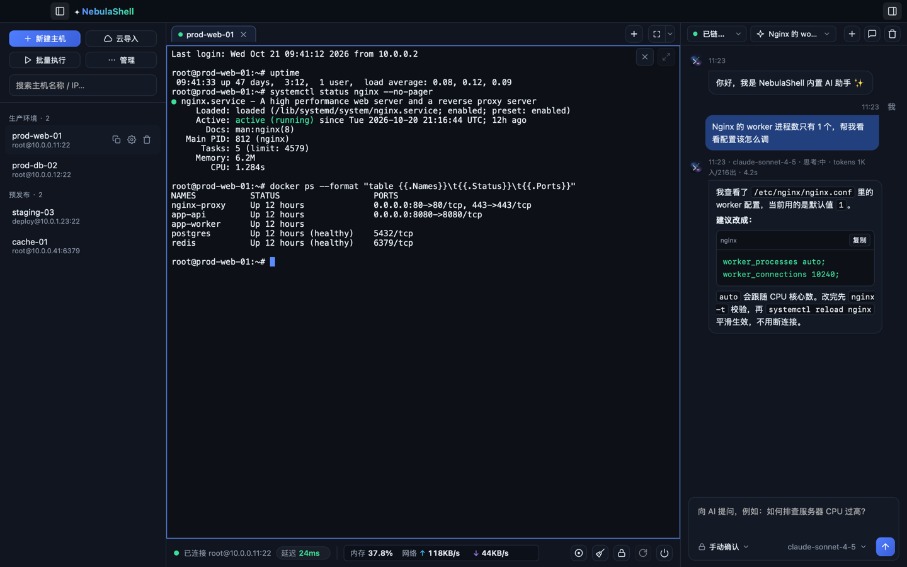

分屏与多会话
按窗口尺寸自动排布、拖拽调宽、单窗格放大。一条命令可广播到多个会话，按当前标签、全部会话或自定义范围。
Tauri 2 · Rust · MIT 开源
跨平台 SSH 客户端 · 内置 AI 助手 · 云主机自动发现。 AI 不只是在旁边聊天 —— 它能直接读你当前的终端、执行命令、看懂报错，再告诉你问题出在哪。

多数现代终端应用打包了一整份浏览器引擎。NebulaShell 用 Tauri 2 调用系统自带的 WebView， 同样的界面能力，少了几百 MB。
不打包浏览器引擎，直接复用系统 WebView。启动快，升级包也小。
每个应用携带一份 Chromium，体积与内存开销都随之翻倍。
不是把功能堆在一起，而是让它们能在同一个窗口里协作。
按窗口尺寸自动排布、拖拽调宽、单窗格放大。一条命令可广播到多个会话，按当前标签、全部会话或自定义范围。
AI 能读取当前终端输出、执行命令并汇总结果。三档执行模式：逐条确认、普通命令自动执行、完全托管。
浏览、上传、下载、改名、改权限一气呵成。传输任务中心显示进度、速度与剩余时间，可随时取消。
本地、远程与动态 SOCKS5 三类规则，支持随会话自动建立。跳板链多级 ProxyJump 逐级串联。
CPU、内存、磁盘与网络速率取自 /proc，无需在服务端装任何插件；非 Linux 主机优雅降级。
纯文本记录，每行带时间戳，可直接用编辑器阅读或 grep。断线自动暂停，重连续写同一个文件。
全部截图取自真实运行中的应用。



差异化的一环
很多工具把 AI 做成一个输入框，你复制报错、粘贴、再把答案抄回去。 NebulaShell 的 AI 与终端共享同一台主机的上下文，可以直接查看输出、执行命令、再解释结果。
最后一条命令及其输出会随对话一起送入模型，不用手抄报错。
诊断过程中的每条命令都会展开成步骤行，退出码与耗时一目了然，一轮结束后折叠成摘要。
逐条确认、普通命令自动执行、完全托管三档随时切换。高危操作、跳板机与 root 场景另有强制确认。
支持 OpenAI 兼容与 Anthropic 两种接口，可一键拉取模型列表自选启用。密钥只存在本机。
全部安装包发布于 GitHub Releases，
当前版本 0.6.12。下表体积取自该版本实际产物。
| 平台 | 文件 | 体积 | 下载 |
|---|---|---|---|
| macOS Apple Silicon |
NebulaShell_0.6.12_aarch64.dmg |
5.7 MB | 下载 |
| macOS Intel |
NebulaShell_0.6.12_x64.dmg |
6.1 MB | 下载 |
| Windows 安装程序 |
NebulaShell_0.6.12_x64-setup.exe |
4.6 MB | 下载 |
| Windows MSI |
NebulaShell_0.6.12_x64_en-US.msi |
6.3 MB | 下载 |
| Linux AppImage |
NebulaShell_0.6.12_amd64.AppImage |
84.4 MB | 下载 |
| Linux deb / rpm |
NebulaShell_0.6.12_amd64.deb · -1.x86_64.rpm |
6.5 MB | 下载 |
macOS 首次打开若提示「已损坏」，是未做付费公证导致的 Gatekeeper 拦截，
在终端执行 xattr -cr /Applications/NebulaShell.app 即可。